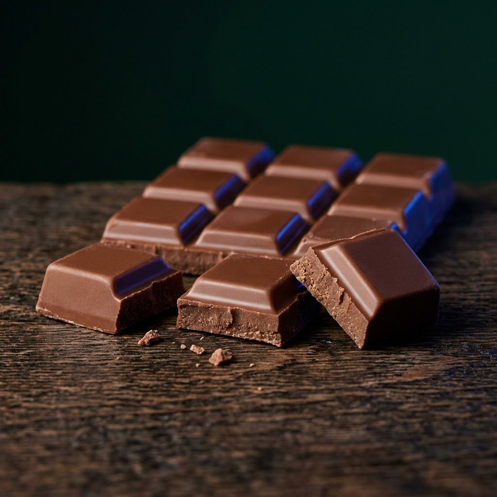
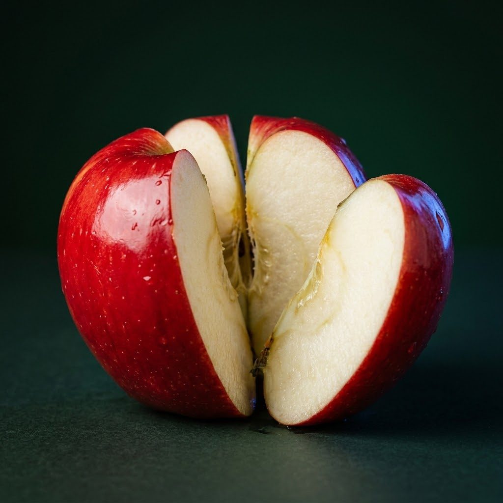

Дроби навсегда: язык пиццы
Полный опорник по руководству: от «что такое дробь» до деления — всё через пиццу, без заучивания правил.
1
Что такое дробь
Дробь появляется, когда целого не хватает или его нужно поделить поровну. У дроби два «этажа» — два вопроса: «Какие?» и «Сколько?»
Знаменатель (внизу) — РАЗМЕР куска: на сколько равных частей разрезали пиццу. Число больше → кусочки мельче.
Числитель (вверху) — КОЛИЧЕСТВО кусков: сколько таких кусков лежит на тарелке.
Золотое правило: знаменатель знаменует (называет) доли — восьмушки, четвертинки; числитель исчисляет (считает), сколько их. Дробная черта — обычное деление: ½ — это буквально 1 ÷ 2.
Пицца разрезана на 8 равных частей, на тарелке 3 куска → 3/8
38 = 3 куска восьмушки

Биссектриса: сначала спрашиваем «на сколько частей резали?» — это низ. Потом «сколько взяли?» — это верх. Два вопроса — и дробь больше не страшна.
2
Основное свойство и сокращение
Взяли полпиццы (½) и разрезали этот кусок ещё пополам: на тарелке теперь 2 куска из 4 (2/4). Пиццы больше не стало — изменилась только нарезка.
12 = 24 = 48
- Расширение — дорезали куски на более мелкие: умножаем верх и низ на одно и то же число.
- Сокращение — склеили мелкие куски обратно: делим верх и низ на одно и то же число. Дробь при этом не меняется!
3
Сложение и вычитание: правило «одинаковой нарезки»
Главная мысль: складывать в штуках можно только одинаковые вещи. Куски разного размера сначала доводим до одного размера — это и есть «приведение к общему знаменателю».
Знаменатели одинаковые
15 + 25 = 35
«Одно яблоко + два яблока = три яблока». Куски одного размера — считаем количество (верх), размер куска (низ) не трогаем.
Знаменатели разные
12 + 14 = 24 + 14 = 34
Половинку дорезали до четвертинок. Сказать «у меня 2 куска» было нельзя — они разного размера!
Дорезали крупный кусок до размера мелкого — теперь честно считаем
4
Умножение и деление: почему тут всё наоборот
Хорошая новость: в умножении и делении приводить куски к одному размеру не нужно.
Умножение дробей: верх на верх, низ на низ. Знак «·» читаем как предлог «ОТ»: ½ · ⅓ — это «половинка от третинки». Треть пиццы, разрезанная пополам, — это шестая часть (⅙).
12 · 13 = 16 — часть от части
Деление: первую дробь оставляем, вторую переворачиваем и умножаем. Деление отвечает на вопрос «сколько раз одно помещается в другом?»: сколько четвертинок поместится в двух пиццах? В одной — 4, в двух — 8.
2 ÷ 14 = 2 · 41 = 8

Хомяк Стресс: умножение — это «от», деление — это «сколько раз поместится». Запомнил два слова — и переворачивать уже не страшно.
5
Неправильные дроби и смешанные числа
- Правильная дробь (¾): кусков меньше, чем в целой пицце — верх меньше низа.
- Неправильная дробь (7/4): 7 кусочков, хотя одна пицца — только из 4. Верх больше или равен низу.
- Смешанное число (1¾): собрали из 4 четвертинок целую пиццу, и ещё 3 куска лежат рядом: 7/4 = 1¾.
74 = 134



lili.math · дроби через пиццу · открыть доску